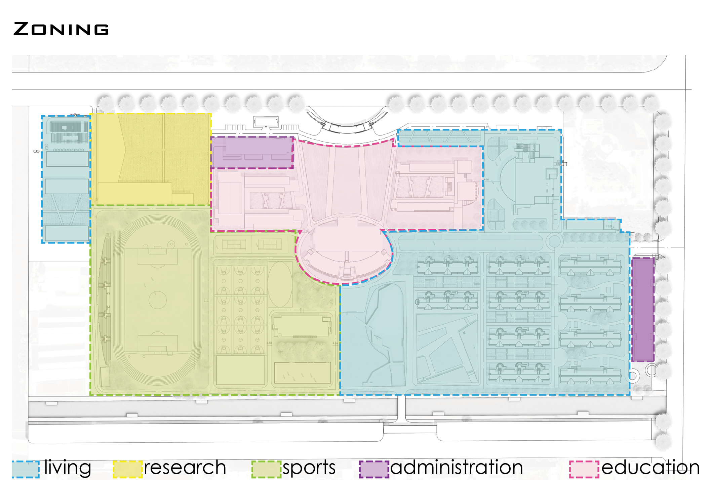
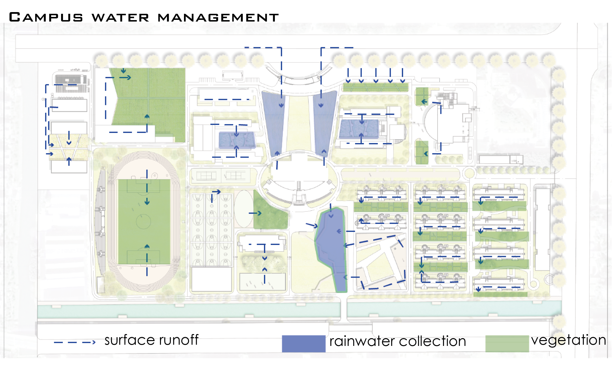
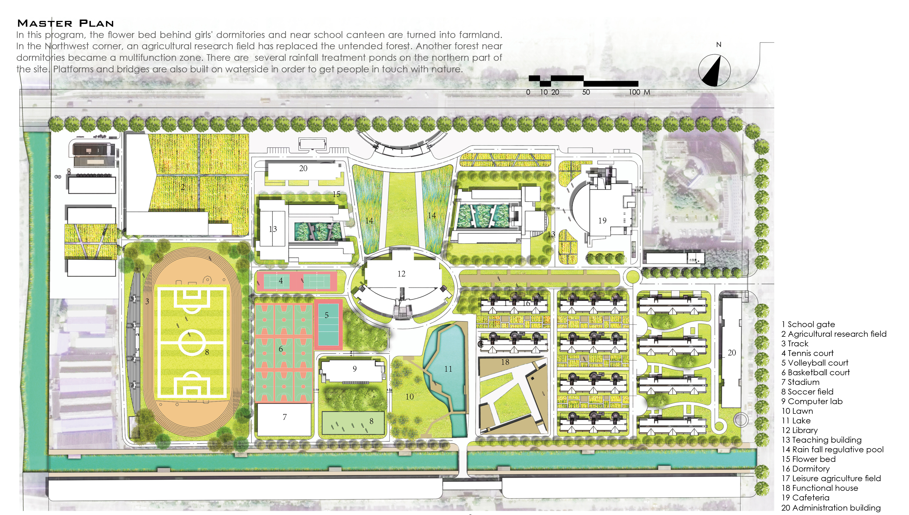
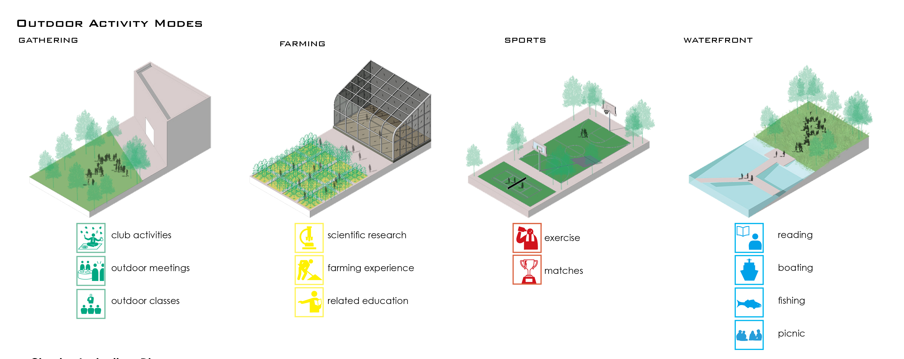
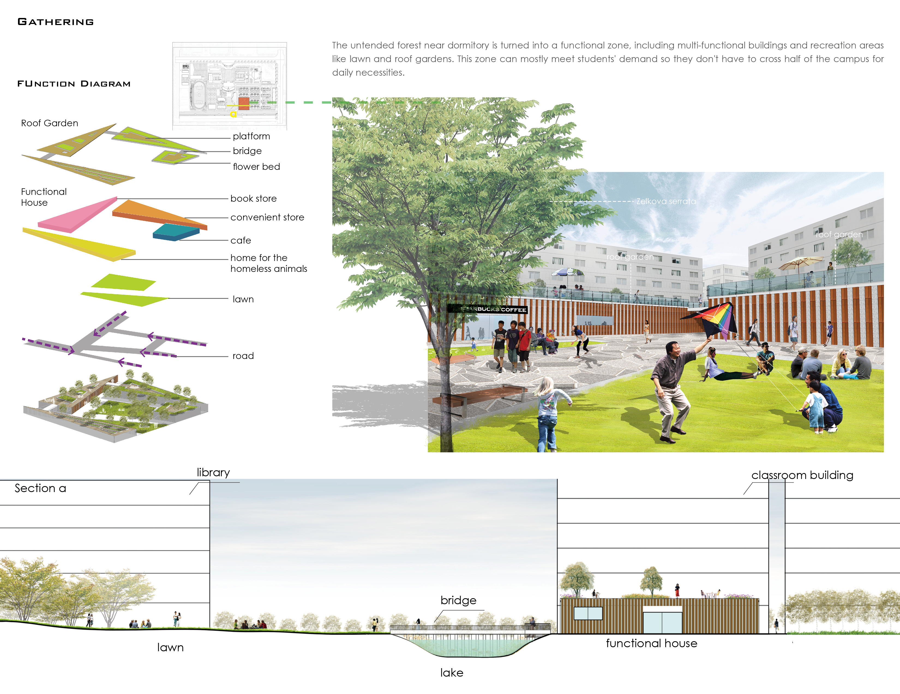

Embracing the Outside World Again
Landscape Design of Shanghai Business School
2017 Spring | Individual Work | Instructors: Zhewei Hu
With the development of technology and internet, most university students choose to stay indoors. This project aims to provide students more chance to connect themselves with outdoor area. It can also help school have a better usage of campus and solve some existing problems, including stormwater management, urban agriculture, multifuncitional public space.





Typologies

Outdoor Recreation

Rain Garden
×